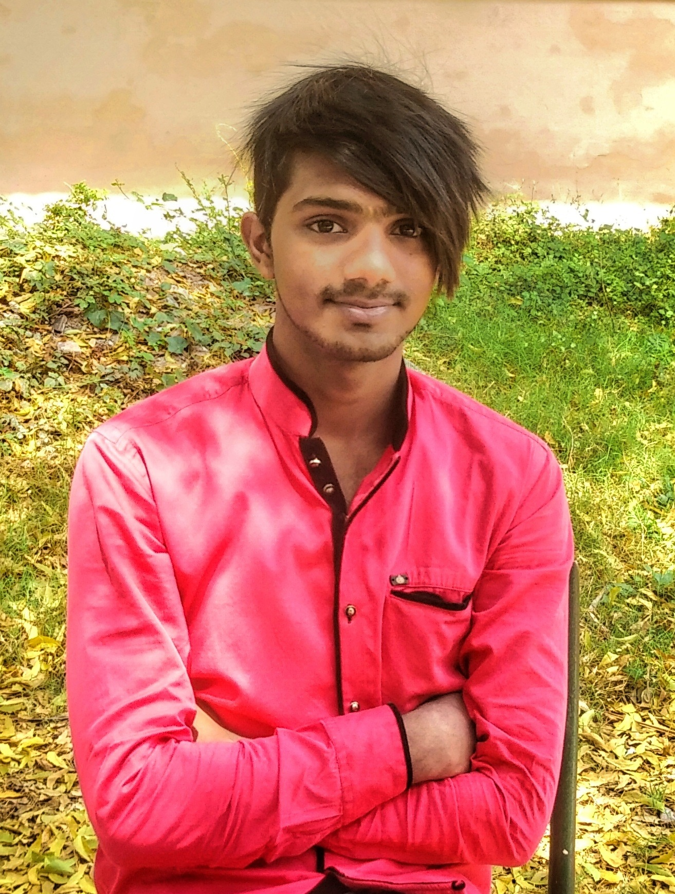

Navith Ahamed (Marketing and Business Development Manager)

"The best way to predict the future
Is by creating it
"
“We,at Framtid Group believe that a comprehensive study of the product market in different countries is of foremost importance for successful placement of the right people in the right place.The professional experience we have accumulated over the years has been a guiding factor in all our strategic processes.We have business associations with genuine companies which adopt very professional ways of screening,interviewing and selecting projects for suitable streams and they honor the young entrepreneurs. The marketing approach of FGC is based on professional ethics.After proper scrutiny of our client requirements,the working environment and the offers they make to prospective workers we put the deal in black and white.We invite applications through advertisements and strictly follow our clients’ guidelines in the pre-screening of the candidates before their project are finally interviewed by the company’s chairman.We keep ourselves within the periphery of our agreement with our clients to follow all the “after the interview” finalization process.This involves all proper legal formalities to obtain work-permits of the selected project from its particular stream’s department.To cut a long story short,Life raising projects through Framtid Group in by all means,an honest,reliable and transparent process.”